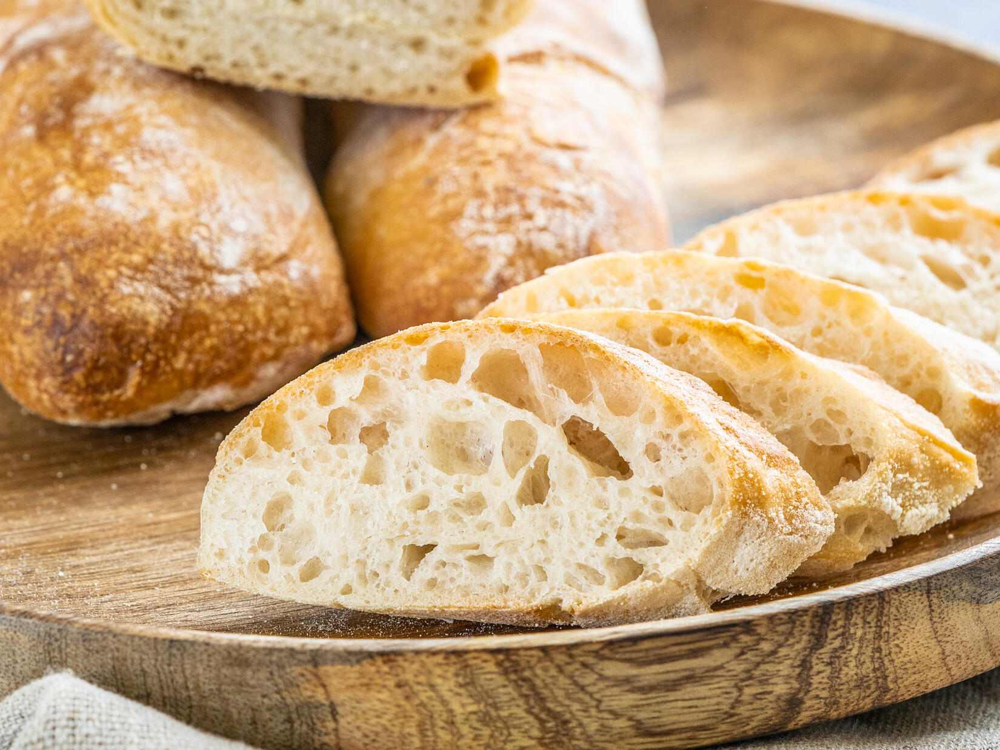

Zutaten:
- 400 g
- 4 g
- 8 g
- 300 ml
- 6 El
- Weizenmehl Typ 550
- frische Hefe
- Salz
- Wasser
- Olivenöl
Zubereitung:
- 300 ml Wasser in eine Schüssel geben und darin 4 g frische Hefe mit einem Schneebese auflösen. 8 g Salz und 400 g Weizenmehl in einer Schüssel vermischen. Hefewasser zugeben und so lange rühren bis alles Mehl gebunden ist.
- Den Teig in eine geölte Schüssel geben, abdecken und über Nacht (10-12 Stunden) im Kühlschrank bei 5-6 °C gehen lassen. Ab 4 °C arbeitet die Hefe nicht mehr.
- Am nächsten Tag den Teig aus dem Kühlschrank nehmen und mindestens zwei Stunden bei Zimmertemperatur gehen lassen.
- Nach zwei Stunden, Arbeitsfläche leicht bemehlen, Teig auf der Arbeitsfläche dehnen und die Ränder in die Mitte falten.
In diesem Video wird die Dehn- und Falttechnik erklärt. - Anschließend den Teig auf ein gut geöltes Blech legen. 15 Minuten ruhen lassen und anschließend nochmals ziehen und falten. Das Ganze 4-6 mal wiederholen, je nach Beschaffenheit des Teiges mit jeweils 15 Minuten Ruhephase zwischen dem Falten.
- Zum Portionieren den Teig auf eine bemehlte Fläche geben und in zwei gleich große Teile teilen. Den Teig nun etwas in die Länge ziehen und die Ränder der längeren Seite in die Mitte falten. Den Teig umdrehen, sodass die entstandene Nahnt auf der Arbeitsfläche aufliegt. 30 Minuten gehen lassen.
In diesem Video wird die Falttechnik erklärt. - In der Zwischenzeit Ofen auf 240 °C vorheizen. Nach 30 Minuten die Brote in den Ofen geben und für ca. 20 Minuten backen.